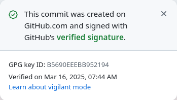
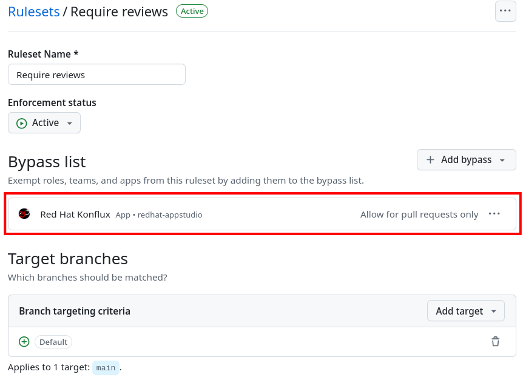

Dependency Management
MintMaker is a service built on top of Renovate. It includes the RPM lockfile extension and integration with Konflux CI.
Renovate is a tool that automates dependency updates in your repository. Its goal is to make dependency management easier and a continued practice. That way, your project will always have the latest fixes for bugs and security issues.
In this documentation, when we mention something about Renovate, it will be a general statement. Therefore it will also apply to MintMaker, since it runs an underlying Renovate service. However, when we say something about MintMaker, it is a specific statement that might not apply to other Renovate instances.
Security
| Always verify that the PRs/MRs for dependency updates are created by verified Konflux accounts. |
GitHub
All MintMaker PRs are created using the red-hat-konflux GitHub app. All commits should contain this signature:
Signed-off-by: red-hat-konflux <126015336+red-hat-konflux[bot]@users.noreply.github.com>and should be signed with GPG key B5690EEEBB952194:

On Konflux staging, the account uses the konflux-staging app and a different email:
Signed-off-by: konflux-staging <124796549+konflux-staging[bot]@users.noreply.github.com>while the GPG key is the same.
GitLab
On GitLab the account used is different for each project or group. The account
name is konflux, but the email used is in the following format:
For projects: project_<project ID>_bot_<32 hex characters>@noreply.gitlab.com
For groups: group_<group ID>_bot_<32 hex characters>@noreply.gitlab.com
The project ID or group ID must come from your project or group when setting up the secrets.
| When updating the GitLab Access Token used by Renovate, the bot’s auto-generated user email will change. If any previous Merge Requests (MRs) from the old bot email were not successfully merged, Renovate may incorrectly assume a human is working on that branch and will skip future updates. To prevent this, ensure all existing Renovate Merge Requests are merged or delete any branches created by Renovate where the MR was not successfully merged. |
Registry credentials
Renovate requires registry credentials to update container images from private registries. Users must provide these credentials via secrets and link them to the component-specific service account in their user namespace.
| If you have already provided registry credentials for building, MintMaker will automatically reuse them. |
If you aren’t receiving updates for an image from an authenticated registry, ensure that a secret with the registry credentials has been created and linked to the appropriate component-specific service account. You can find instructions for creating and linking these secrets here.
The secret type must be kubernetes.io/dockerconfigjson. MintMaker will ignore any other secret types.
|
Configuration
Renovate is a very configurable tool. Since every project has its unique needs, it is fundamental to take advantage of that flexibility to make MintMaker work in the best possible manner.
The MintMaker team provides a base set of configurations that provide a sensible starting point. It enables users to have a good experience out of the box.
Create your custom configuration
The base configuration can be found here. This config file is applied to all repositories onboarded in Konflux and serves as our global Renovate configuration.
| Do not copy the base configuration to your own project. Always start with an empty configuration file as described below. |
| While this link points to the latest global configuration, our deployment may use a configuration from a specific commit. However, in most cases, there won’t be any conflicts between the deployed version and the latest version. For reference purposes, you can refer to the latest version of the configuration. |
Individual repositories can override this config to tweak Renovate’s behavior to
their needs by adding a renovate.json file in the top level directory (or any
of the locations listed at the top of this page
are also supported, for simplicity, this document always refers to renovate.json)
of the repository’s default branch.
All available configuration options can be found in
Renovate documentation.
When customizing your configs, use the following base template to build on:
{
"$schema": "https://docs.renovatebot.com/renovate-schema.json"
}Configuration validation
The customized renovate.json file can be validated with this GitHub Action. Note that the validator only checks
syntax validity and adherence to the configuration schema and it cannot verify
that, for example, a file matching pattern will actually match any files in your repository.
Configuration presets
Before diving deeper into all the possible configuarion options, consider using
one of MintMaker’s prepared presets. Presets provide predefined options that can
be added to the extends field in your renovate.json, as suggested below.
Multiple presets can be combined as needed.
{
"extends": ["github>konflux-ci/mintmaker-presets:<preset name>"]
}The following table describes presets available at current time. In addition to MintMaker presets, you can also explore options from the official Renovate documentation.
| Preset name | Description |
|---|---|
cve-automerge-all* |
Automerge all CVE fixes |
cve-automerge-critical* |
Automerge CVE fixes with Critical severity |
cve-automerge-high* |
Automerge CVE fixes with High severity or higher |
cve-automerge-moderate* |
Automerge CVE fixes with Moderate severity or higher |
disable-minor-updates |
Disable major and minor semantic version updates |
group-python-requirements |
Group |
group-python-poetry |
Group Poetry updates into a single PR |
update-fedora-to-stable |
Suggest only stable Fedora releases (based on endoflife.date) |
Below is an example renovate.json that disables major version updates and groups python
requirements.txt updates into a single pull/merge request:
{
"extends": [
":disableMajorUpdates",
"github>konflux-ci/mintmaker-presets:group-python-requirements"
]
}| *These presets will not enable automerge for RPM security updates. The instructions for enabling automerge for RPMs can be found here |
Overriding manager specific configuration
To override a single manager’s configuration, you need to follow the same pattern
used in the base config, for example to override the grouping of tekton manager:
{
"tekton": {
"packageRules": [
{
"matchPackageNames": [],
...
}
]
}
}If you were to define the packageRules outside of the tekton option,
your rules wouldn’t take any effect, because tekton → packageRules is more specific.
Available managers
Renovate is based around the concept of package managers. Package managers
are tools that manage dependencies in a certain category, programming language or configuration file. While some managers work
"out of the box", for others (e.g. Kubernetes or regex manager) you need to
specify the details in the renovate.json configuration file. You can refer
to a specific manager in the
Renovate manager section.
We are working on enabling every manager available in Renovate. The list of currently enabled managers is available below.
List of currently supported managers
| Category | Enabled Managers |
|---|---|
Ansible |
|
Batect |
|
Bazel |
|
C and C++ |
|
Continuous Delivery |
|
Continuous Integration |
|
Custom Managers |
|
Dart |
|
Docker |
|
.NET |
|
Elixir |
|
Go |
|
Helm |
|
Infrastructure as Code |
|
Java |
|
JavaScript |
|
Kubernetes |
|
Node.js |
|
Perl |
|
PHP |
|
Python |
|
RPM |
|
Ruby |
|
Rust |
|
Swift |
|
Terraform |
|
N/A |
|
Managers with a strikethrough are supported by Renovate, but not currently enabled or
officially supported in MintMaker. You can enable them customizing your renovate.json. However, the MintMaker team cannot guarantee any level of functionality and will not provide support for these managers.
| Detailed compatibility/support matrix for certain managers can be found here. |
The pip-compile manager will currently update dependencies using Python 3.12
(even if the user applies constraints
in the configuration). Our Renovate instance relies on tools installed in the container image and cannot
dynamically upgrade or downgrade the pip-compile version at current time.
|
The enabledManagers configuration option in Renovate is not extendable between global
and repository-level configurations. When enabling additional managers in your repository’s
renovate.json, you need to specify a complete list of all desired managers.
|
Scheduling
MintMaker has a base schedule which runs every 4 hours, starting at 00:00 UTC (i.e. 04:00, 08:00, 12:00, …). While you can configure some aspects of your renovate schedule (see below), you cannot influence MintMaker to run any more frequently than this base schedule.
All enabled managers run according to this base schedule, except the Tekton manager which has a manager-specific schedule and runs on Saturdays after 5 AM UTC.
Schedule (UTC) |
Managers |
at any time |
managers except tekton |
saturday after 5 AM |
tekton |
Overriding the default schedule
While you cannot override the base renovate schedule (every 4 hours), you can override when different managers are scheduled for your repository by modifying the schedule config option.
Top-level schedule: Apply the schedule globally in your repository for all managers by using schedule in the top level of the config file:
{
"$schema": "https://docs.renovatebot.com/renovate-schema.json",
"schedule": ["* * * * 0,6"]
}| MintMaker’s global Renovate configuration includes a manager-specific schedule for the Tekton manager as described above. This manager-specific schedules take precedence over the top-level "schedule" setting from your repo’s Renovate config file. To use your preferred schedule for the Tekton manager, you must explicitly override this manager-specific schedule. |
Manager-specific schedule: Configure schedules for specific managers:
{
"$schema": "https://docs.renovatebot.com/renovate-schema.json",
"tekton": {
"schedule": ["* * * * 0,6"]
}
}If you have multiple manager-specific schedules to configure or override, you can add a package rule like this:
{
"$schema": "https://docs.renovatebot.com/renovate-schema.json",
"packageRules": [
{
"matchManagers": ["gomod", "tekton"],
"schedule": ["* * * * 0,6"]
}
]
}Custom container files
The Renovate’s manager for container files has a specific rule to match files:
(^|/|\.)([Dd]ocker|[Cc]ontainer)file$
(^|/)([Dd]ocker|[Cc]ontainer)file[^/]*$If your container/Docker file has a different name, you will need to extend the match rule, which can be done following these instructions.
The fileMatch configuration is mergeable, meaning that when
setting new values in the repository config, they will not override the default
config. Instead the new values will be merged together with the existing rules.
For example, you can add a section like this in your renovate.json file:
{
"dockerfile": {
"fileMatch": [
"path/to/containerfile1",
"path/to/containerfile2"
]
}
}Ignoring certain dependencies
If you don’t want updates to certain dependencies, but don’t want to disable
the whole manager, you can use the ignoreDeps option:
{
"$schema": "https://docs.renovatebot.com/renovate-schema.json",
"ignoreDeps": [
"registry.redhat.io/openshift4/ose-operator-registry",
"registry.redhat.io/openshift4/ose-operator-registry-rhel9",
"brew.registry.redhat.io/rh-osbs/openshift-ose-operator-registry-rhel9"
]
}Advanced topics
Offboarding a repository
If you intend to disable MintMaker for your repository, please follow this guide.
Prerequisites
-
Ensure you have CLI access to the Konflux cluster where your component is created.
-
Ensure you have necessary permission to annotate a component.
Steps
-
Determine the Konflux component you want to off-board from MintMaker.
-
Use the
kubectloroccommand to add the annotationmintmaker.appstudio.redhat.com/disabled: "true"to the component.
Example:
oc -n <namespace> annotate component/<component-name> mintmaker.appstudio.redhat.com/disabled=true| This annotation disables MintMaker at the component level (a specific repository and branch combination). When a repository or branch has multiple components, you must annotate each component individually to disable MintMaker for the entire branch or repository. |
How to limit the number of PRs/MRs
If you find that you are receiving too many PRs/MRs from MintMaker, there are configuration
options available to limit the number of open requests or the rate at which they are created.
Below are the available options that you can set per repository in your renovate.json.
prConcurrentLimit: This option sets a limit on the number of open PRs/MRs that Renovate will
create concurrently. The default is 20.
branchConcurrentLimit: This option sets a limit on the maximum number of branches that can be
created concurrently by Renovate. This option will reduce the time taken to rebase every update from Renovate. The default is unlimited.
prHourlyLimit: This option controls the number of PRs that Renovate will create per hour.
prHourlyLimit helps to limit the rate of opening new PRs. The default is 2.
schedule: Defines specific times when Renovate is allowed to create branches and PRs. This can
help prevent PRs from being created during busy periods.
Here is an example combining these options:
{
"$schema": "https://docs.renovatebot.com/renovate-schema.json",
"prConcurrentLimit": 5,
"branchConcurrentLimit": 0,
"prHourlyLimit": 2,
"schedule": ["after 10pm and before 6am on every weekday"]
}
Since MintMaker disables pruneStaleBranches, it is not recommended
to modify branchConcurrentLimit in any way. The accumulation of old branches
could lead to no new PRs/MRs getting created.
|
How to stop PRs/MRs from being updated outside of schedule
If you set up a schedule for your repository via the schedule config, it’s possible that MintMaker will still update PRs/MRs outside of the allowed times.
The schedule config manages branch creation, but will not stop updates to PRs/MRs from branches that are already created. If you want to prevent this behavior, use
updateNotScheduled option, which when set to false will disallow for updates in existing PRs/MRs outside of the schedule:
{
"$schema": "https://docs.renovatebot.com/renovate-schema.json",
"updateNotScheduled": false
}The default value of updateNotScheduled is true, which leads to this behavior that might seem unexpected at first.
Automerge
It is possible to configure Renovate to merge updates automatically for specific dependencies. You can find the documentation on this topic here.
When enabled for a given PR/MR, the automerge will happen provided two conditions are met:
-
the repository CI pipeline ran successfully, and
-
the PR/MR branch is up-to-date with the base branch.
Because of the need for the CI pipeline to succeed, you should expect that the merge will only happen on the next MintMaker run.
This following timeline exemplifies the events leading to an automerge in a repository:
| Time | Event |
|---|---|
[10:00am] |
MintMaker run 1 starts |
[10:01am] |
PR for dependency |
[10:02am] |
CI pipeline is started |
[10:05am] |
CI pipeline finishes successfully |
[10:10am] |
MintMaker run 1 is finished |
… |
… |
[12:00am] |
MintMaker run 2 starts |
[12:01am] |
PR for dependency |
[12:02am] |
PR for dependency |
You can also enable automerge without the need of CI tests passing, by
setting ignoreTests to true.
Because of the need for the PR/MR branch being up-to-date with the base branch, automerging multiple branches at once does not work.
| Automerging can be risky. Since the merges will happen without anyone looking at the code, they have a higher risk of introducing regression. |
It is very important to have a good test coverage in place, to mitigate that risk.
You can set automerge only for a certain type of updates. For example, updates to patch and minor updates of certain packages.
For example, to enable automerge for non-major updates on all dependencies, you
can add the following to renovate.json:
{
"$schema": "https://docs.renovatebot.com/renovate-schema.json",
"packageRules": [
{
"description": "Automerge non-major updates",
"matchUpdateTypes": ["minor", "patch"],
"automerge": true
}
]
}alternatively, to enable non-major updates only for specific packages, you can use:
{
"$schema": "https://docs.renovatebot.com/renovate-schema.json",
"packageRules": [
{
"description": "Automerge non-major updates on depA and depB",
"matchUpdateTypes": ["minor", "patch"],
"matchPackageNames": ["depA", "depB"],
"automerge": true
}
]
}See Renovate’s docs on this topic for further examples. They show how to set automerge for specific dependency groups, types, etc.
Finally, to check if automerge is cofigured for a given PR/MR, you can look for the annotation "Automerge: Enabled" in the PR/MR body.
Bypassing approvals
In order to allow Renovate to automatically merge PRs with dependency updates in repositories that normally require code reviews before merging, you can configure a bypass rule just for Renovate, by navigating to Settings → Rules → Rulesets and adding Red Hat Konflux app to a bypass list, like so:

Automerge using OpenShift CI/Prow
Since the Red Hat Konflux app is a trusted app for the OpenShift CI bot, you can configure Renovate to automatically add approval labels by using the following config:
{
"$schema": "https://docs.renovatebot.com/renovate-schema.json",
"addLabels": [
"/approve",
"/lgtm"
]
}You can also combine addLabels with any packageRules combination.
Automerge for RPM lockfile updates
Enabling automerge for RPM updates involves specific configurations, which are covered in this section. MintMaker can create two types of RPM updates: regular and security.
To enable automerge exclusively for RPM security updates based on the severity of the fixed CVEs, add the rpmVulnerabilityAutomerge top-level setting to your Renovate configuration:
{
"$schema": "https://docs.renovatebot.com/renovate-schema.json",
"rpmVulnerabilityAutomerge": "ALL" | "MEDIUM" | "HIGH" | "CRITICAL"
}This setting accepts one of four values. Security updates are automerged if the severity of all fixed CVEs meets or exceeds the configured threshold. Setting this to "ALL" automerges every RPM security update, regardless of severity.
You can also use one of MintMaker’s prepared presets. These presets automatically add the rpmVulnerabilityAutomerge setting to your config while also enabling automerge for other vulnerability updates.
|
If you want to automerge all RPM updates (both regular and security), you must ensure that your config file enables automerge for either the rpm-lockfile manager specifically, or for all lockfile refresh operations.
To enable automerge exclusively for the rpm-lockfile manager, you can use the manager-specific directive:
{
"$schema": "https://docs.renovatebot.com/renovate-schema.json",
"rpm-lockfile": {
"automerge": true
}
}Alternatively, you can enable automerge for all lockfile refreshes by configuring the lockFileMaintenance directive:
{
"$schema": "https://docs.renovatebot.com/renovate-schema.json",
"lockFileMaintenance": {
"automerge": true
}
}
Package rules using the matchPackageNames matcher do not apply to lockfile refreshes. If you want to enable automerge for RPM updates using packageRules, you must create a rule that uses a different matcher (e.g., matchManagers or matchUpdateTypes).
|
If you enable general automerge for all RPM updates (by configuring rpm-lockfile or lockFileMaintenance), the rpmVulnerabilityAutomerge setting will be ignored.
|
Inherited config
Renovate supports the use of an Inherited config. The Inherited config file is used to apply the same Renovate settings to all repositories in an organization/group. This functionality is useful if your organization contains many repositories that should use the same or similar Renovate configuration.
If you want to use the inherited config, it must be located in the repository <organization>/renovate-config and
the file must be named org-inherited-config.json. The file can contain any
configuration options that you want to apply to all repositories in an organization.
Please note the applied order of Renovate config files:
-
Default config
-
Global config
-
Inherited config
-
Repository config
-
Resolved presets referenced in config
Configurations applied later will overwrite prior values. This means that inherited config can be used to modify MintMaker’s default behavior. Similarly, repository config overwrites inherited config, so organization-wide settings can be changed on a per repository basis. If you want to learn more about how Renovate applies configuration, take a look at the Renovate configuration overview.
Please note that the use of inherited config is optional and its absence will not result in an error.
Specify the registry in your FROM line
Let’s imagine that your Containerfile or Dockerfile has the following FROM line:
FROM ubi9/ubi:9.4-1123In this case, the ubi9 image is pulled from the client’s default registry, which might be docker.io, for example.
This might lead to errors, such as MintMaker being unable to update your Containerfile or Dockerfile
due to missing credentials for accessing that registry. In order to avoid this issue, specify the registry explicitly, such as:
FROM registry.access.redhat.com/ubi9/ubi:9.4-1123| docker.io registry is not supported by MintMaker by default. |
Enable container image tag versioning
It is recommended to specify the base images using a digest, like so:
FROM registry.redhat.io/ubi8/ubi-minimal:latest@sha256:cf095e5668919ba1b4ace3888107684ad9d587b1830d3eb56973e6a54f456e67However, if you prefer to use image tags as versions, Renovate might not be able to update them by default. To enable the tag updates, use the following config for all container images:
{
"dockerfile": {
"versioning": "redhat"
}
}or just for specific images using the packageRules option:
{
"packageRules": [
{
"matchDatasources": ["docker"],
"matchPackageNames": ["registry.redhat.io/ubi8/ubi-minimal"],
"versioning": "redhat"
}
]
}or take a look at the workarounds:supportRedHatImageVersion preset for other available options.
Cleanup
Renovate creates a branch for each update, but these branches will not be removed,
because MintMaker disables the pruneStaleBranches option. It is not recommended
to enable this option, however alternative options exist.
Automatic deletion of branches on GitHub
You can enable the option to Automatically delete head branches as described in this GitHub documentation page.
Caching
By default Renovate is set up to cache most of the requests for fetching dependency updates. The cache TTL is set to 4 hours to mirror the MintMaker schedule.
This means that if a dependency is updated upstream, you might not get the latest update immediately, but with a delay of up to 8 hours (worst case).
Another caveat is if you update a dependency manually, you might later receive a PR that will try to downgrade the dependency, because the version value is still cached. In this case it is recommended either not to update dependencies manually, or to wait for another MintMaker cycle when the cache should be refreshed.
Potential issues with baseBranchPatterns configuration
Renovate has a configuration option named baseBranchPatterns
(formerly known as baseBranches), which allows you to specify which branches Renovate should process.
In Konflux, a component represents a specific repository and branch combination. MintMaker creates a separate Renovate job for each component. If duplicate repository+branch combinations exist, MintMaker will randomly select one component to process that combination. By default, each Renovate job processes only the branch associated with its component.
However, when a repository has a baseBranchPatterns configuration, this setting takes effect
and can cause the following issues:
Concurrent job conflicts
If a repository has two branches (main and release-2.0) that both have components in Konflux,
and the renovate.json contains:
{
"baseBranchPatterns": ["main", "release-2.0"]
}When MintMaker creates a Renovate job to process the main branch, it will actually process
both main and release-2.0 branches. Similarly, the separate Renovate job created for the
release-2.0 branch will also process both branches. If these two jobs run simultaneously,
conflicts can occur leading to unexpected behavior.
There are two workarounds for this issue:
-
Remove baseBranchPatterns: If all the branches you need to process have corresponding components in Konflux, and there are no special requirements, remove the
baseBranchPatternsconfiguration. -
Disable MintMaker for overlapping components: If you need to keep the
baseBranchPatternsconfiguration, note thatbaseBranchPatternsrestricts Renovate to process only the branches listed in it. If all the branches you want processed are covered bybaseBranchPatterns, disable MintMaker for all but one component for this repository (since Renovate reads configuration from the default branch, only one active component is needed to process all branches listed inbaseBranchPatterns). However, if you have components with branches that are not covered bybaseBranchPatternsand you still want them to be processed, you should try removingbaseBranchPatternsinstead.
Stale branches not being cleaned up
MintMaker sets additionalBranchPrefix to {{baseBranch}}/ by default, which includes
the base branch name in the PR/MR source branch. This prevents conflicts when processing multiple
branches, as each branch gets its own unique prefix (e.g., konflux/mintmaker/main/some-package-1.x).
When you add baseBranchPatterns to your configuration, Renovate automatically adds another
instance of the base branch name to the branch prefix. This results in duplicate base branch
names in the source branch:
-
Before baseBranchPatterns:
konflux/mintmaker/main/some-package-1.x -
After baseBranchPatterns:
konflux/mintmaker/main-main/some-package-1.x
This change in naming convention means that any existing PRs/MRs and branches created before
adding baseBranchPatterns will not be automatically closed or cleaned up by MintMaker. The old
branches with a single base branch name are no longer recognized as belonging to the current
base branch. You will need to manually close these old PRs/MRs and delete the stale branches.
baseBranchPatterns is not a prerequisite for using matchBaseBranches
in packageRules. You can use matchBaseBranches to apply different rules to different branches
without configuring baseBranchPatterns.
|